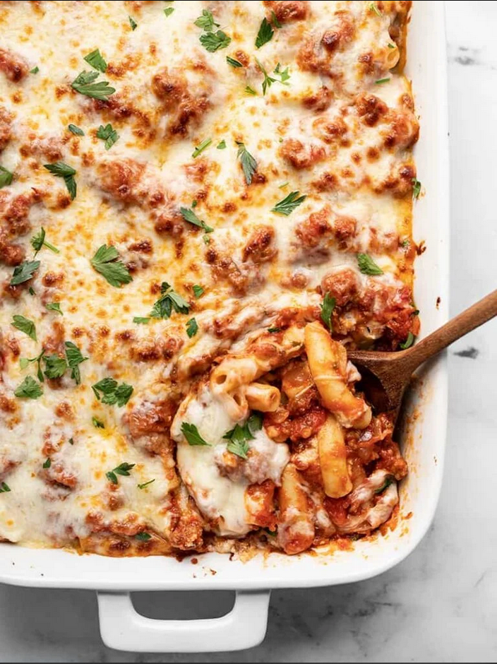

Baked Ziti

Description
Classic baked ziti, just like Karen used to make for Bobby. A simple,
low cost recipe with a high number of servings.
Ingredients
- 1 lb. Italian sausage
- 1 yellow onion
- 3 oz. tomato paste
- 1 28 oz. can crushed tomatoes
- 1 Tbsp. Italian seasoning blend
- 1/2 cup water
- 1 lb. ziti pasta
- 1/2 Tbsp salt
- 15 oz. ricotta cheese
- 1 cup Italian cheese blend
- 2 cups shredded mozzarella
- 1 handful parsley
- cracked pepper
Instructions